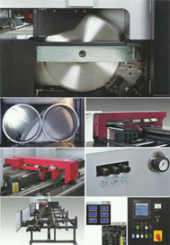

.png)
chl-2515a ii
(takeda 튜브절단기)

| image | contents |
|---|---|
|  |
|
| 구분 | CHL-2515A II | |||
|---|---|---|---|---|
| Work | 소재크기 | 원형 | 1本 | ø35 ~ ø139.8mm |
| 2本 | ø35 ~ ø114.3mm | |||
| 사각 | 1本 | □40 ~ □150mm | ||
| 2本 | □40 ~ □125mm | |||
| 최대소재질량 | 550kg | |||
| 소재길이 | 최대 | 12000mm | ||
| 최소 | 510mm+제품길이 | |||
| 절단길이 | 끝단절단길이 | 15mm이상 | ||
| 잔재길이 | 70mm이상 | |||
| 제품길이 | 15mm이상 | |||
| Circular saw |
톱날종류 | 초경날 : t 6.0mm이상 | ||
| HSS : t 6.0mm미만 | ||||
| 톱날외경 | 최대 | ø550mm | ||
| 최소 | ø420mm | |||
| 톱날두께 | 2.5 ~ 3.0mm | |||
| 날 수 | 초경날 | 90 ~ 140 (절단소재에 따라 다름) | ||
| HSS | 180 ~ 300 (절단소재에 따라 다름) | |||
| Cutting | 절단조건 | 주속 | 70 ~ 300m/min | |
| 회전속도 | 180 ~ 300m/min-1 | |||
| 전달속도 | 0 ~ 20mm/sec | |||
| 톱날 흔들림방지 장치 | 2개 | |||
| 톱날이동축 유효 스트로크 | 615mm | |||
| 구동방식 | AC서보모터 + 볼스크류 | |||
| 절단방식 | 하부 슬라이드 방식 | |||
| 톱날 브레이크 | 파우더 클러치 방식 | |||
| 바이스압 | 횡바이스 | 6.7kN (작업에 따라 감압가능) | ||
| 종바이스 | 4.3kN (작업에 따라 감압가능) | |||
| Sizing Glipper |
구동방식 | AC서보모터 + 볼스크류 | ||
| 유효 스트로크 | 2005mm+최종 스트로크40mm | |||
| 반송위치 결정 속도 | 30m/min | |||
| 최소 위치결정 | 0.01mm | |||
| 글립퍼 위치 | 전체폭 | |||
| 그립 압 | 6.7kN | |||
| Cutting Fluid |
방식 | 고점도 미스트 방식 | ||
| 용량 | 1.8L | |||
| Driving Motor |
톱날구동모터용량 | 11kW x 4P | ||
| 톱날이송모터용량 | 0.8kW AC 서보모터 | |||
| GFC구동모터용량 | 0.8kW AC 서보모터 | |||
| 유압용 모터용량 | 1.5kW | |||
| Hydraulic drive system |
저장용량 | 20L | ||
| 설정압력 | 3.5Mpa | |||
| Air | 설정압력 | 0.5Mpa | ||
| Machine | Size(폭x넓이x높이) | 3077mm x 2440mm x 1550mm | ||
| 본체무게 | 3800kg | |||
| video |
|---|
top